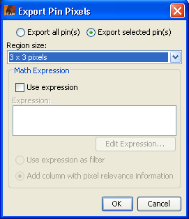

| Export Pin Pixels | |
This command allows the export of pixels which surround a pin.

You can choose to export the pixels surrounding a single pin or to export the pixels of multiple pins.
The region specifies the area surrounding a pin which will be exported.
The optional expression can be used a filter for the pixels or the result for each pixel
can be added as an additional column to the output.